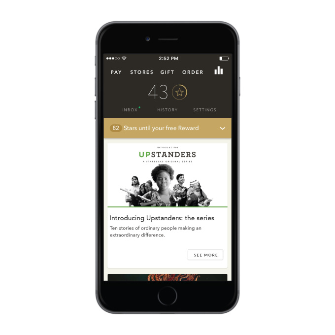

2017年初，一条消息令所有北美零售商震动：星巴克用户所有存储在礼品卡和移动应用中的现金超过12亿美元，而这一成绩，超过了绝大多数美国银行机构（下图）。
在传统零售商中，星巴克将客户忠诚推至前所未有的高度，所有人都将这一成绩归结于其成功的移动支付平台，而事实上，这是其十五年客户忠诚度的长期积累。让我们回顾星巴克数字产品的十五年，看她是如何一步一步成长为数字忠诚的最佳案例之一的。
2001年：礼品卡
礼品卡（Gift Card）已经成为美国人生活的一部分，每年超过1千亿美元的礼品卡被93%的美国人购买或使用，平均消费高达213美元每年（参考），而回到2001年，星巴克是最先推出礼品卡的公司之一。礼品卡的初衷，是希望客户可以将咖啡当作礼品赠送，有趣的是，据调查，只有25%的客户（参考）将礼品卡当作礼品，大多数的客户只是为了结账更快。

因为更多客户将礼品卡和支付结合在一起，这就出现了对于交易的额外需要，而这部分客户恰好又是较为高频光顾的消费者，至此高频交易和交易需求结合在了一起，星巴克为这部分客户提供了许多礼品卡公司难以提供的解决方案：丢失补款。
客户在丢失礼品卡以后可以将礼品卡中的金额找回，毕竟是自己使用，这一特点满足了高频客户对于金额的担忧。这使得星巴克的礼品卡受到消费者热捧，2015年全年，有50亿美元的礼品卡被消费者购买（参考），这已经占到了接近25%的全年销售额（参考）。
2009年：移动支付
如果说礼品卡的成功是迎合了高配消费者对于快速交易的需求，那么2009年星巴克首推的移动支付方案，则是近一步的优化——消费者无需取出自己的礼品卡就可以实现支付。
时任星巴克移动支付项目负责人Benjamin Vigier一改当时由客户扫码的主流方案，设计了特殊的条码扫描机器（下图），由柜台服务生进行扫码，这一方案在当时甚至受到了很多人的嘲笑，事实上，这一方案在当时是极具超前意识、并早于Apple和Google公司。
这一方案的核心在于并没有增加客户一个额外的环节，只是改变了现有扫描礼品卡环节的交互方式，最初的支付页面也十分简单：
至此，大多数使用礼品卡的消费者找到了更加快速的结帐方式，其移动应用的下载量持续上升，但是依然，应用不能称之为完整的移动支付方案，金额仍然存在于某个虚拟礼品卡中，充值行为依然要通过物理礼品卡作为介质，这一情况到了两年后得到了解决。
2011年：移动钱包
到2011年，星巴克正式宣布消费者可以通过关联信用卡等多种支付方式在移动应用中预存一定量的金额，于此同时，对店面的POS系统进行全面的升级，移动支付全面铺开——2011年1月全美6800家星巴克店全面接受移动支付。
至此，星巴克成为业界为数不多提供「完全移动支付」体验的公司，即充值和支付完全通过手机应用完成。高频用户的支付问题到2011年被全面解决，以移动钱包为应用主体的星巴克App也已经趋于稳定，核心功能（支付）积攒了大量高频使用者，接下来，「客户忠诚」终于有机会成为主角，而这离礼品卡推出已经过了10年之久。
同时，用户第一次可以通过移动应用查询到积分情况，而不需要通过访问某个独立的网站（Starbucks Account），客户体验进一步增强。
2014年：积分第一
在2011年移动应用改版之前，星巴克并没有传统意义上的积分计划（Rewards Program），而采用购买不同级别的会员卡获得优惠，这一设计在星巴克早期大大降低的运营的难度——缺少便捷的支付手段，客户对积分的获取、升级、兑换等就会产生更多要求。而这一情况随着移动支付手段越来越便捷开始发生改观。
2014年，星巴克对其广受欢迎的移动应用做了重大的改版，在这一版的设计中，Reward Dashboard（下图左一）的概念被着重提出，围绕在周围的是三个次级页面（支付、店面、礼品卡）。
在这样的设计里，积分成为产品核心，支付退居其次，同时在2014年的设计中，开始出现了诸如Message（消息）的概念，这一概念在2015年的更新中被演化成Inbox（收件箱）。
2014年的改版成功，将移动应用的基础转移到积分上，围绕这一衡量忠诚的最佳货币，从2015年开始，星巴克开始了大规模的数字化建设。
2015年：忠诚优先与店外体验
积分只是用忠诚兑换价值的货币而已，真正的「忠诚优先」体系在价值，而不在货币本身。2015年星巴克的App设计者正式提出「忠诚优先（Loyalty First）」的概念，首当其冲的设计改变便是将积分页面隐藏，转而呈现收件箱（Inbox）。

在收件箱中，用户开始收到具有相关性的信息，包括促销和活动等等，积分被简化成金黄色的信息条。
2015年同时推出的Mobile Order & Pay更是将客户忠诚推到了全新的高度，从15年1月起，顾客可以在全美所有店面实现手机下单、店内取单的无缝体验。
这个体验的推出，标志着消费者和星巴克品牌的交互并不只发生在店面内，更重要的是：为星巴克更加广泛的产品线提供了销售机会，特别是使个性化推荐成为可能。
星巴克从未停止过对其产品线的创新和持续投入，2008年，星巴克推出了多款早餐产品，例如「星巴克燕麦粥（Starbucks Perfect Oatmeal）」。然而在早晨这样的高峰期，店员和顾客都很难有时间推荐或购买而外的产品，星巴克便很难有机会向消费者推荐配搭的其他产品。
而Mobile Order & Pay的推出彻底解决了这个难题，并演化出更多无限可能的销售方式。目前，如果顾客预定一款咖啡，在下单页面中将根据顾客所下单的时间结合以往购买历史推荐匹配的产品。
积分、促销推送、推荐三个移动渠道上客户忠诚的重要元素被正式建立起来，并互相作用和影响，形成了多种可能的玩法，例如：
- 积分 + 促销推送 + 推荐 = 用双倍积分的方式进行促销推送最可能购买的某一产品；
- 积分 + 促销推送 = 不定期地在顾客最常光顾时间推送限时积分挑战（Rewards Dash）；
- 积分 + 推荐 = 在推荐产品中获得额外积分；
- 促销推送 + 推荐 = 推送推荐产品品尝的活动。
在这个体系下，产品既获得了更多的销售机会、客户亦可获得更加个性化的忠诚回报。
十五年的产品闭环
如果我们回顾星巴克十五年来的产品演进过程，我们可以发现一个显著的趋势，那便是逐渐完成「店面—礼品卡—移动应用」的闭环。
2001至2009年，大量推广礼品卡作为一种店内的支付手段；2009至2014年，推出基于帮助礼品卡快速支付的移动应用，并逐渐成熟和积累大量开始使用积分的顾客；2014年至今，不断推出服务（例如Mobile Order&Pay）通过移动应用向店面进行引流。
这一闭环的完成从开始到完成，经历了十五年的时间，而接下来的十五年时间，星巴克将把创新集中在：
- 对闭环中核心概念（店面、礼品卡、移动应用）的持续创新；
- 对概念间关系进行深度创新；
- 在更大的生态系统中进行生态创新。
本文的下篇，将继续讨论星巴克后续的产品战略。